<div class="ui top fixed inverted menu">
  <div class="ui container">
    <a class="item header" [routerLink]="['/']" routerLinkActive="active" [routerLinkActiveOptions]="{exact:
      true}">Reactivities</a>
    <a class="item" [routerLink]="['/', 'activities']" routerLinkActive="active" [routerLinkActiveOptions]="{exact:
      true}">Activities</a>
    <a class="item" [routerLink]="['/', 'activities', 'new']" routerLinkActive="active" [routerLinkActiveOptions]="{exact:
      true}"><button class="ui button positive">Create Activity</button></a>
  </div>
</div>